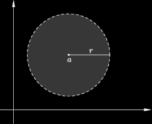

Metric Spaces
It is often useful to consider how far apart two objects are; that is, the “distance” between them. A reasonable distance measure would have to satisfy certain requirements, such as being a nonnegative real number.
A metric space is a topological space that includes the notion of a metric or distance between its elements. The notion of metric space was introduced in 1906 by Maurice Fréchet and developed and named by Felix Hausdorff in 1914.
Definition 2.1.1. Let M be a non-empty set and d a real-valued function d: M × M ⟶ ℝ, also called a distance function such that for all x, y, z ∈ M:
POSITIVITY: d(x,y) ≥ 0 and d(x, y) = 0 if and only if x = y;
SYMMETRY: d(x,y) = d(y,x);
TRIANGLE INEQUALITY d(a, c) ≤ d(x, y) + d(y, z).
Then d is said to be a metric on M, (M, d) is called a metric space and d(x, y) is referred to as the distance between a and b. □
Examples 2.1.2.
If M is any subset of ℝn, the function d(x,y) = |x − y| is a metric on M, called the Euclidean metric;
We verify it for ℝ:|a − b| > 0 , for all a and b in ℝ, and |a − b| = 0 if and only if a = b,
|a − b| = |b − a|
|a − c| ≤ |a − b| + |b − c|. (Deduce this from |x + y| ≤ |x| + |y|.)
Similarly, if M is any metric space and X is a subset of M, then X inherits a metric simply by restricting the distance function of M to pairs of points in X.
If X is any set, define a metric on X by setting d(x,y) = 1 unless x = y, in which cases d(x,y) = 0. This is called the discrete metric on X.
A subset A ⊆ M is said to be an open subset of M if it contains an open ball around each of its points; i.e.:
∀x ∈ A, ∃r > 0 : Br(x) ⊆ A.
A subset A ⊆ M is said to be a closed subset of M if M \ A is open (i,e. the algebraic complement of A is open).
Both M and ∅ are open;
Any union of arbitrarly many open subsets of M is an open susbet of M.
Any intersection of finitely many open subsets of M is an open subset of M;
given distinct points x,y ∈ M there exist open sets U,V such that x ∈ U, y ∈ V and U ∪ V = ∅.
|a − b| ≥ 0 , for all a and b in ℝ, and |a − b| = 0 if and only if a = b;
|a − b| = |b − a|;
|a − c| ≤ |a − b| + |b − c|. (Deduce this from |x + y| ≤ |x| + |y|.)
Here are some of the standard definitions used in metric space theory.
Definition 2.1.5. Let (M, d) be a metric space. An open ball of center a ∈ M and radius r > 0, denoted by Br(a), is defined by:
Br(a) = {x ∈ M : d(x, a) < r}.
A closed ball of center a ∈ M and radius r > 0, denoted by Bc(a, r), is defined by:
B̅r(a) = {x ∈ M : d(x, a) ≤ r}.
Let (M, d) be a metric space;
Example 2.1.7. In ℝ with the euclidean metric Br (a) is the open interval (a − r, a + r). □
Example 2.1.8. In ℝ2 with the euclidean metric Br (a) is the open disc with center a and radius r. □
The next theorem summarizes the most important properties of open and closed subsets of metric spaces.
Theorem 2.1.9 (Properties of Open subsets of a Metric Space). Let (M, d) a metric space . Then
Proof. (i) and (ii) are trivial consequence of the definition of open sets. For (iii) first consider the case of the intersection of two open sets say A1 and A2. Let x ∈ A1 ∪ A2. Then x ∈ A1 and x ∈ A2. Since A1 is open, there exists r1 > 0 such that Br1(x) ⊂ A1. Similarly since A2 is open, there exists r2 > 0 such that Br2(x) ⊂ A2. Now let r = min {r1, r2}. Then clearly Br ⊂ Br1(x) ∪ Br2(x) ⊂ A1 ∪ A2. Thus A1 ∪ A2 is open (a set is open in a metric space iff it contains an open ball centered at every point). One can either generalise this argument or use induction to settle the general case. The exceptional case of the intersection of an empy family of open sets is already covered under (i).
For (iv) let x,y ∈ X and x ≠ y. Then d(x,y) > 0. Choose r so that 0 < r < d(x,y)/2 and let U = Br(x), V = Br(y). Then clearly U,V are open sets containing x,y respectively. Also they are mutually disjoint, for if z ∈ U ∪ V then d(x,z) < r and d(z,y) < t whence d(x,y) < 2r by triable inequality, a contradiction. □
A normed vector space is a metric space because the norm can induce a metric. In the following, we may speak almost interchangeably of an inner product space, a normed space, or a metric space, but we must recognize that none is a special case of another.
Metrics Induced by Norms
If subtraction and a norm are defined for the elements of S, the most common way of forming a metric is by using the norm. If ||·|| is a norm, we can verify that
d(x, y) = ||x − y||
is a metric by using the properties of a norm to establish the three properties of a metric above. The norm in equation (2.42) may, of course, be induced by an inner product.
The general inner products, norms, and metrics defined above are relevant in a wide range of applications. The sets on which they are defined can consist of various types of objects. In the context of real vectors, the most common inner product is the dot product; the most common norm is the Euclidean norm that arises from the dot product; and the most common metric is the one defined by the Euclidean norm, called the Euclidean distance.
Example 3.1.3. Let X be a non-empty set and d the function from X × X into ℝ defined by
Then d is a metric on X and is called the discrete metric. ■
Examples 3.1.4. The function d : ℝ2 × ℝ2 → ℝ given by
is a metric on the set ℝ since
We call d the euclidean metric on ℝ. Yet another metric on ℝ2 is given by
d (⟨a1, a2, b1, b2⟩) = |a1 − b1| + |a2 − b2|. ■
Example 3.1.4. Let C[0, 1] denote the set of continuous functions from [0, 1] into ℝ. A metric is defined on this set by
∫10 |f(x) − g(x)| dx
where f and g are in C[0, 1]. d(f, g) is precisely the area of the region which lies between the graphs of the functions and the lines x = 0 and x = 1, as illustrated below considering the two functions f(x) = 2x − x3 and g(x) = x − x2.

Another metric is defined on C [0, 1] as follows:
d∗ (f, g) = sup{|f(x) − g(x)| : x ∈ [0, 1]}
If we try to calculate the metrix for this particular example we find that |f(x) − g(x)| = |−x3 + x2 +x|; The maximum value of a differentiable function h on (0,1), is found solving h'(x) = 0 and checking the endpoints 0 and 1. Taking the derivative and equating to zero: −3x2 + 2x + 1 = 0, solving the quadratic equation we find 1 and − 1/3 and considering only the positive solution x = 1; when you put x into |f(x) − g(x)|, it turns out to give 1. ■